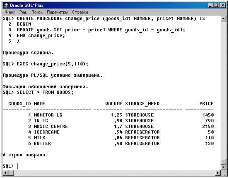
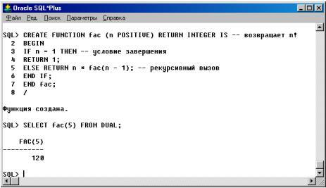

Параметры подпрограмм
Фактические и формальные параметры
Подпрограммы принимают и передают информацию через ПАРАМЕТРЫ. Переменные или выражения, которые специфицированы в списке параметров в вызове подпрограммы, называются ФАКТИЧЕСКИМИ параметрами.
Например, следующий вызов функции передает два фактических параметра, new _ goods _ id и need _ quantity :
done := quantity_ok (new_goods_id, need_quantity);
Как показывает следующий вызов функции, в некоторых случаях в качестве фактических параметров можно использовать выражения:
done := quantity_ok (new_goods_id, quan_1+ quan_2);
Переменные, объявленные в спецификации подпрограммы и используемые в теле подпрограммы, называются ФОРМАЛЬНЫМИ параметрами.
Например, следующая процедура объявляет два формальных параметра с именами goods _ id 1 и price 1:
PROCEDURE change_price (goods_id1 NUMBER, price1 NUMBER) IS
BEGIN
UPDATE goods SET price = price1 WHERE goods_id = goods_id1;
END change_price;
Вызов процедуры показан на рисунке 8.

Рисунок 8 - Пример создания и вызова процедуры в утилите SQL * Plus
Хотя это и не обязательно, хорошая практика программирования рекомендует использовать разные имена для фактических и формальных параметров. Когда вы вызываете процедуру change _ price , фактические параметры вычисляются, и их значения присваиваются соответствующим формальным параметрам. При этом PL/SQL преобразует значение из одного типа данных в другой, если необходимо.
Например, следующий вызов процедуры change _ price законен:
change_price (change_goods, 2500);
Фактический параметр и соответствующий ему формальный параметр должны иметь совместимые типы данных. Например, PL/SQL не может преобразовать друг в друга типы данных DATE и REAL. Кроме того, значение результата также должно быть совместимо с новым типом данных. Следующий вызов процедуры возбудит предопределенное исключение VALUE_ERROR, потому что PL/SQL не может преобразовать второй фактический параметр в число:
change _ price ( change _ goods , $2500'); -- из-за использования строкового значения
Позиционная и именная нотация
При вызове подпрограммы можно записывать фактические параметры, используя позиционную или именную нотацию. Иными словами, вы можете указывать соответствие между фактическими и формальными параметрами через позиции этих параметров или через их имена.
Например, при объявлениях
DECLARE
change_goods NUMBER(4);
new_price NUMBER(8,2);
PROCEDURE change_price (goods_id1 NUMBER, price1 NUMBER) IS ...
Вы можете вызвать процедуру change _ price четырьмя логически эквивалентными способами:
BEGIN
change_price(change_goods, new_price); -- позиционная нотация
change_price(change_goods=> goods_id1, new_price=> price1); -- именная нотация
change_price(new_price=> price1, change_goods=> goods_id1); -- именная нотация
change_price(change_goods, new_price=> price1); -- смешанная нотация
...
END;
Первый вызов процедуры использует позиционную нотацию. Компилятор PL/SQL ассоциирует первый фактический параметр, change _ goods , с первым формальным параметром, goods _ id 1, а второй фактический параметр, new _ price , - со вторым формальным параметром, price 1.
Второй вызов процедуры использует именную нотацию. Стрелка ассоциирует формальный параметр слева от стрелки с фактическим параметром справа от стрелки.
Третий вызов процедуры также использует именную нотацию и показывает, что вы можете задавать пары параметров в любом порядке. Поэтому вы не обязаны знать порядок, в котором перечислены формальные параметры.
Четвертый вызов процедуры показывает, что вы можете смешивать позиционную и именную нотации. В данном случае первый параметр задан в позиционной, а второй - в именной нотации. Позиционная нотация в этом варианте должна предшествовать именной. Обратное не допускается. Например, следующий вызов процедуры незаконен:
change_price(new_price=> price1, change_goods); -- незаконно
Моды параметров
Вы используете моды параметров, чтобы определить поведение формальных параметров подпрограммы. Все три возможные моды: IN (умалчиваемая), OUT и IN OUT, могут использоваться в любой процедуре. Что касается функций, то избегайте использования моды OUT или IN OUT в функциях. Назначение функции - принять нуль или более аргументов и возвратить единственное значение. Возврат функцией нескольких результирующих значений является плохой практикой программирования. Кроме того, функции должны быть свободны от ПОБОЧНЫХ ЭФФЕКТОВ, то есть не должны изменять значений переменных, не локальных для данной функции.
IN
Параметр с модой IN передает значение вызываемой подпрограмме. Внутри подпрограммы такой параметр выступает как константа. Поэтому ему нельзя присвоить значение. Например , следующее предложение присваивания вызовет ошибку компиляции :
PROCEDURE insert_storage (ware_id1 IN NUMBER, goods_id1 IN NUMBER, quantity1 IN NUMBER) IS
Storage_id1 NUMBER(4);
Volume_goods NUMBER(6,2);
Volume_goods_sum NUMBER(6,2);
Volume_ware NUMBER(6,2);
Over_goods NUMBER(6,2);
BEGIN
SELECT volume INTO Volume_goods FROM goods WHERE goods_id= goods_id1;
Volume_goods_sum:= Volume_goods*quantity1;
SELECT volume_rest INTO Volume_ware FROM warehouses WHERE ware_id= ware_id1;
IF (Volume_ware< Volume_goods_sum) THEN
Over_goods:=(Volume_goods_sum-Volume_ware)/Volume_goods;
quantity1:= quantity1- Over_goods; -- незаконно
END IF;
INSERT INTO storages VALUES (stor_seq.nextval, ware_id1, goods_id1, quantity1, SYSDATE, NULL);
UPDATE Warehouses SET Volume_rest= Volume_rest- Volume_goods_sum WHERE
ware_id= ware_id1;
END insert_storage;
Фактический параметр, соответствующий формальному параметру с модой IN, может быть константой, литералом, инициализированной переменной или выражением. В отличие от параметров OUT и IN OUT, параметры IN могут инициализироваться умалчиваемыми значениями.
OUT
Параметр с модой OUT позволяет возвращать значение вызывающей программе. Внутри подпрограммы такой параметр выступает как неинициализированная переменная. Поэтому его значение нельзя присваивать другим переменным или переприсвоить самому себе. Например, следующее определив параметр quantity 1 с модой OUT мы получим неверное его использование в следующих местах:
PROCEDURE insert_storage (ware_id1 IN NUMBER, goods_id1 IN NUMBER, quantity1 OUT NUMBER) IS
…
BEGIN
SELECT volume INTO Volume_goods FROM goods WHERE goods_id= goods_id1;
Volume_goods_sum:= Volume_goods*quantity1; -- незаконно
…
quantity1:= quantity1- Over_goods; -- незаконно
…
END insert _ storage ;
Фактический параметр, соответствующий формальному параметру с модой OUT, должен быть переменной; он не может быть константой или выражением. Например, следующий вызов процедуры незаконен:
insert_storage (15, 34, quan1+ quan2); -- синтаксическая ошибка
PL/SQL проверяет на такие синтаксические ошибки во время компиляции, не допуская возможного перекрытия констант и выражений. Формальный параметр OUT может (но не обязан) иметь значение в момент вызова подпрограммы. Однако это значение теряется, когда вы вызываете подпрограмму. Внутри подпрограммы формальный параметр OUT нельзя использовать в выражении; единственная операция, допустимая на таком параметре - это присваивание ему значения. Перед выходом из подпрограммы не забывайте явно присвоить значения параметрам OUT. В противном случае значения соответствующих фактических параметров будут не определены. При успешном выходе из подпрограммы PL/SQL присваивает значения фактическим параметрам. Однако, если вы выходите с необработанным исключением, PL/SQL НЕ присваивает значений фактическим параметрам.
IN OUT
Параметр IN OUT позволяет вам передавать в подпрограмму начальные значения и возвращать обновленные значения вызывающей программе. Внутри подпрограммы такой параметр выступает как инициализированная переменная. Поэтому ему можно присвоить значение, а его значение можно присваивать другим переменным. Иными словами, параметр IN OUT можно рассматривать как обычную переменную. Вы можете изменять его значение или обращаться к этому значению любыми способами, как показывает следующий пример с переписанной процедурой insert _ storage :
PROCEDURE insert_storage (ware_id1 IN NUMBER, goods_id1 IN NUMBER, quantity1 IN OUT NUMBER) IS
Storage_id1 NUMBER(4);
Volume_goods NUMBER(6,2);
Volume_goods_sum NUMBER(6,2);
Volume_ware NUMBER(6,2);
Over_goods NUMBER(6,2);
BEGIN
SELECT volume INTO Volume_goods FROM goods WHERE goods_id= goods_id1;
Volume_goods_sum:= Volume_goods*quantity1;
SELECT volume_rest INTO Volume_ware FROM warehouses WHERE ware_id= ware_id1;
IF (Volume_ware< Volume_goods_sum) THEN
Over_goods:=(Volume_goods_sum-Volume_ware)/Volume_goods;
quantity1:= quantity1- Over_goods;
END IF;
INSERT INTO storages VALUES (stor_seq.nextval, ware_id1, goods_id1, quantity1, SYSDATE, NULL);
UPDATE Warehouses SET Volume_rest= Volume_rest- Volume_goods_sum WHERE
ware_id= ware_id1;
quantity1:=Over_goods;
COMMIT;
END insert_storage;
Теперь процедура получает номер склада, куда нужно определить товар, номер товара и его количество. Используя информацию о свободном объеме склада и подсчитав объем, необходимый для хранения товара, процедура определяет остаток товара, который необходимо поместить на другой склад. Информацию об остатке процедура возвращает через переменную quantity 1.
Фактический параметр, соответствующий формальному параметру IN OUT, должен быть переменной; он не может быть константой или выражением.
Умалчиваемые значения параметров
Как показывает следующий пример, вы можете инициализировать параметры с модой IN умалчиваемыми значениями. Это позволяет передавать подпрограмме различное число параметров, принимая или перекрывая умалчиваемые значения по вашему желанию. Более того, можно добавлять новые формальные параметры, не требуя каждый раз изменять все существующие вызовы данной подпрограммы.
PROCEDURE insert_ware (new_address VARCHAR2 DEFAULT 'KHARKOV',
new_volume NUMBER DEFAULT 1000,
new_volume_rest NUMBER DEFAULT 1000,
new_storage_have VARCHAR2 DEFAULT HANGAR') IS
BEGIN
IF (new_volume<>1000) THEN
INSERT INTO warehouses VALUES (ware_seq.NEXTVAL, new_address, new_volume, new_volume, new_storage_have);
ELSE
INSERT INTO warehouses VALUES (ware_seq.NEXTVAL, new_address, new_volume, new_volume_rest, new_storage_have);
END IF;
END insert_ware;
Если фактический параметр не передан, используется умалчиваемое значение соответствующего формального параметра.
Рассмотрим следующие вызовы процедуры insert _ ware :
BEGIN
...
insert_ware;
insert_ware ('KIEV');
insert_ware ('KIEV', 2000);
...
END;
Первый вызов не передает никаких фактических параметров, так что используются все умолчания. Второй вызов передает один фактический параметр, так что умолчание используется для new _ volume , new _ volume _ rest , new _ storage _ have (т.е. мы создаем новый стандартный склад в Киеве). Третий вызов передает 2 параметра, так что умалчиваемые значения используется для new _ volume _ rest и new _ storage _ have . В большинстве случаев вы можете использовать позиционную нотацию для перекрытия умалчиваемых значений формальных параметров. Однако вы не можете пропустить формальный параметр, опустив для него соответствующий фактический параметр.
Например, следующий вызов логически некорректен, так как он ассоциирует фактический параметр ' refregirator ' с формальным параметром new _ volume _ rest , а не с формальным параметром new _ storage _ have :
insert_ware ('KIEV', 2000, 'refregirator');-- некорректно
Нельзя обойти эту проблему, указав запятую вместо отсутствующего позиционного параметра. Например, следующий вызов незаконен:
insert _ ware (' KIEV ', 2000, , ' refregirator '); -- синтаксическая ошибка
В таких случаях вы должны использовать именную нотацию, например:
insert _ ware (' KIEV ', 2000, new _ storage _ have =>' refregirator ');
Не забывайте, что позиционную нотацию нельзя применять после именной.
Перекрытие имен
PL/SQL позволяет вам ПЕРЕКРЫВАТЬ имена подпрограмм. Иными словами, вы можете использовать одно и то же имя для нескольких различных подпрограмм, если только их формальные параметры различаются по количеству, порядку или семействам типов данных.
Перекрывающиеся имена подпрограмм могут появляться только в блоке, подпрограмме или пакете. Иными словами, нельзя перекрывать имен независимых подпрограмм. Нельзя перекрывать две подпрограммы, если их формальные параметры различаются лишь именами или модами параметров. Например , следующее перекрытие незаконно :
PROCEDURE delete_my (goods_id1 IN NUMBER) IS BEGIN ... END delete_my;
PROCEDURE delete_my (ware_id1 IN NUMBER) IS BEGIN ... END delete_my;
Более того, нельзя перекрывать две подпрограммы, если их формальные параметры различаются лишь типами данных, причем эти типы данных относятся к одному и тому же семейству. Например, следующее перекрытие незаконно, потому что типы данных INTEGER и NUMBER входят в одно и то же семейство:
PROCEDURE delete_my (goods_id1 IN NUMBER) IS
BEGIN
...
END delete_my;
PROCEDURE delete_my (ware_id1 IN INTEGER) IS
BEGIN
...
END delete_my;
Наконец, нельзя перекрывать две функции, если они различаются лишь типами данных результирующего значения, даже если эти типы данных относятся к разным семействам. Например, следующее перекрытие незаконно:
FUNCTION count_my (goods_id1 NUMBER) RETURN BOOLEAN IS
BEGIN
...
END count_my;
FUNCTION count_my (goods_id1 NUMBER) RETURN NUMBER IS
BEGIN
...
END count_my;
Рекурсия
Рекурсия является мощным способом упрощения разработки алгоритмов. По существу, РЕКУРСИЯ означает обращение к самому себе. В рекурсивной математической последовательности каждый член выводится путем применения формулы к предыдущим членам.
Рассматривайте рекурсивный вызов как вызов некоторой другой подпрограммы, которая выполняет ту же задачу, что и ваша подпрограмма. Каждый рекурсивный вызов создает новые экземпляры всех объектов, объявленных в подпрограмме, включая параметры, переменные, курсоры и исключения. Аналогично, на каждом уровне рекурсивного спуска создаются новые экземпляры предложений SQL.
В рекурсивной подпрограмме должно быть по меньшей мере два пути логики: тот, который ведет к рекурсивному вызову, и тот, который не ведет к такому вызову. Иными словами, хотя бы один путь должен приводить к УСЛОВИЮ ЗАВЕРШЕНИЯ. В противном случае рекурсия (теоретически) продолжалась бы бесконечно. На практике, если рекурсивная подпрограмма начинает бесконечно вызывать саму себя, PL/SQL в конце концов переполняет свою память и возбуждает предопределенное исключение STORAGE_ERROR.
При решении некоторых задач программирования вы должны повторять последовательность предложений, пока не будет выполнено некоторое условие. Для этого можно использовать либо итерацию, либо рекурсию. Рекурсия применима там, где задача может быть разбита на более простые версии этой же задачи. Например, вы можете вычислить 3! следующим способом: 0! = 1 1! = 1 * 0! = 1 * 1 = 1 2! = 2 * 1! = 2 * 1 = 2 3! = 3 * 2! = 3 * 2 = 6
Чтобы реализовать этот алгоритм, вы могли бы написать следующую рекурсивную функцию, которая вычисляет факториал положительного целого числа:
FUNCTION fac (n POSITIVE) RETURN INTEGER IS -- возвращает n!
BEGIN
IF n = 1 THEN -- условие завершения
RETURN 1;
ELSE RETURN n * fac(n - 1); -- рекурсивный вызов
END IF;
END fac;
Вызов функции показн на рисунке 9.

Рисунок 9 - Пример создания и вызова функции из утилиты SQL * Plus
При каждом рекурсивном вызове n уменьшается. В конце концов, n станет равным 1, и рекурсия остановится.
Будьте внимательны в выборе места, в которое вы помещаете рекурсивный вызов. Если вы помещаете его в курсорный цикл FOR или между предложениями OPEN и CLOSE, то при каждом вызове открывается очередной курсор. Как следствие, ваша программа может превысить лимит, устанавливаемый параметром инициализации ORACLE OPEN_CURSORS.
В отличие от итерации, рекурсия не является существенной для программирования на PL/SQL. Любая проблема, которая может быть решена рекурсией, может быть решена и итерацией. Концепцию итерации легче усвоить, поскольку примеры рекурсии не столь часты в повседневной жизни. Как следствие, итеративную версию подпрограммы обычно легче спроектировать, чем рекурсивную версию той же программы. Однако рекурсивная версия обычно проще, меньше, и потому ее легче отладить.